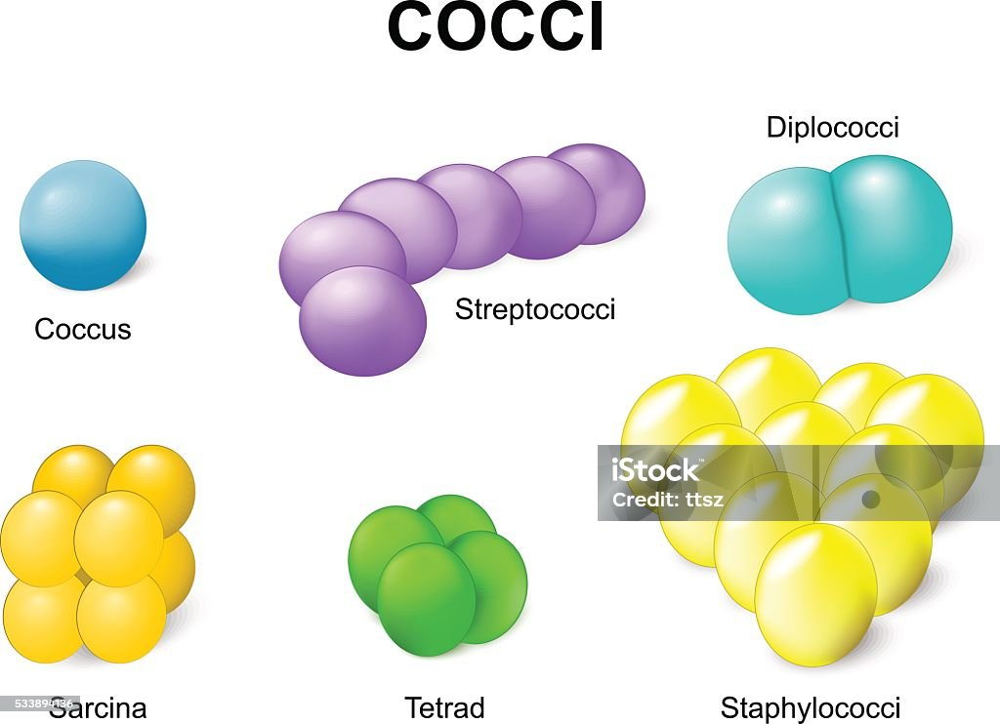
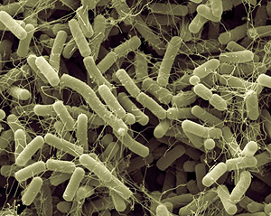
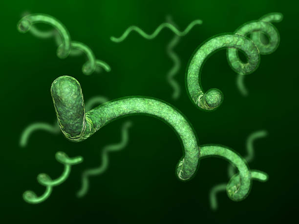

Домен прокариотических микроорганизмов. Бактерии обычно достигают нескольких микрометров в длину, их клетки могут иметь разнообразную форму: от шарообразной до палочковидной и спиралевидной. Бактерии — одна из первых форм жизни на Земле и встречаются почти во всех земных местообитаниях. Они населяют почву, пресные и морские водоёмы, кислые горячие источники, радиоактивные отходы и глубинные слои земной коры. Бактерии часто являются симбионтами и паразитами растений и животных.

Кокки – бактерии шаровидной формы: стафилококки, сарцины, микрококки и стрептококки. Некоторые из них абсолютно безвредны, но наличие кокковой флоры с условно-патогенными формами может говорить о воспалении или бактериальном вагинозе.

Бациллы (лат. Bacillus) — обширный (около 217 видов) род грамположительных палочковидных бактерий, образующих внутриклеточные споры. Большинство бацилл — почвенные редуценты. Некоторые бациллы вызывают болезни животных и человека, например сибирскую язву, токсикоинфекции (Bacillus cereus).

Спириллы — род бактерий, имеющих форму спирально извитых или дугообразно изогнутых палочек. Размеры спирилл варьируют у разных видов в широких пределах: ширина от 0,6—0,8 до 2—3 мкм, длина от 1—3,2 до 30—50 мкм. Не образуют спор, грамотрицательные, подвижны благодаря пучку жгутиков, расположенных на конце клетки.